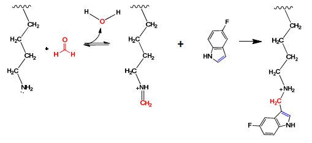
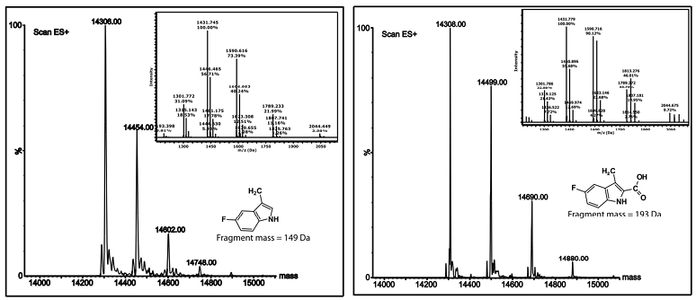
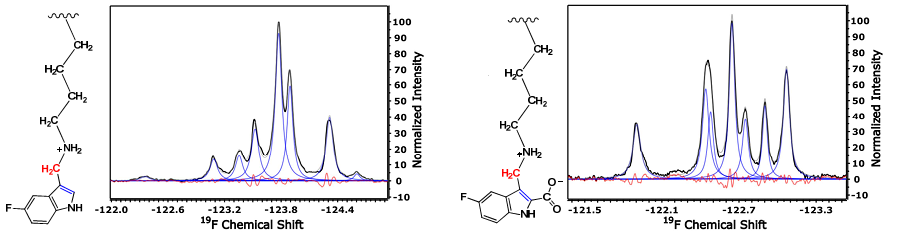
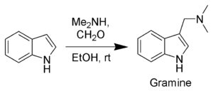

Site-Specific Labeling of Proteins with Indoles
Site-specific labeling is often used to chemically modify proteins at specific amino acids for various applications including:
a) Conjugation of a chemical probe (e.g. fluorophore for imaging
applications, radioisotopes for metabolic studies, PET-imaging, MRI)
b) Structure-function studies (by chemically modifying a protein at
selected residues, we can often gain insight into function of
particular domains and key amino acid interactions - e.g. salt-bridges)
c) Bioconjugation for therapeutics (e.g. ADC - Antibody-Drug conjugates) or drug-delivery systems (nanoparticles)
d) Functionally-modifying proteins (e.g. enzyme function modulation)
e) Covalent-drugs (e.g. cysteine-specific covalent therapeutics)
and more...
Therefore, the applications of site-specific chemical modification of
proteins spans various fields from imaging, to structural biology, to
drug-development, and materials science.
Having worked extensively on chemically-modifying lysine residues and
amino-termini of proteins, a new method was developed with specific
applications for chemically-probing proterins with fluoroindoles. A
subsequent post goes more in-depth into the rationale behind
fluorine-tagging of proteins but it can be briefly stated that the
fluorine nucleus is very sensitive to micro-environment and so it is a
useful probe for structure-function studies.
This new methodology involves first forming imine intermediates at each
amino group (lysines + N-termini) by incubating the protein with
aqueous formaldehyde (formalin). Formaldehyde rapidly reacts with amino
groups to form a reactive schiff-base. In an earlier post (Protein
Methylation), we described how the schiff base can be reduced with
sodium cyanoborohydride to form mono- and di-methyllysines. If we
substitute the hydride reducing agent for a reactive indole, we will
find that the indole will react with the imine (schiff base) to form a
new amino-indole conjugate as shown in the scheme below.

Figure 1. Reaction between a lysine side-chain amino group and a reactive indole following treatment with aqueous formaldehyde.
The reaction proceeds in two steps:
1) Reaction between the lysine side-chain amino group and formaldehyde.
This results in the formation of a reactive imine (schiff-base)
intermediate
2) Reaction between the newly formed schiff-base and the C3 carbon of an indole.
The resulting conjugate was confirmed by mass spectrometry (ESI-MS) and by NMR:


Figure 2. (Top) ESI+ Mass
spectra for 5-Fluoroindole- and 5-Fluoroindolecarboxylate-labeled
lysozyme. (Top Left) ES+ maximum entropy calculated mass spectrum
for 5-Fluoroindole-labeled egg white lysozyme. Inlay depicts original
m/z spectrum used to product the max entropy spectrum. (Top Right) ES+
maximum entropy spectrum for 5-Fluoroindolecarboxylate-labeled HEWL.
Each successive mass peak corresponds to the addition of a mass
equivalent of either 5-fluoroindole + CH2 or
5-fluoroindolecarboxylate+CH2, where the CH2 is from the
formaldehyde carbon during imine formation. Inlays are original
mass spectra used to generate the max entropy spectra. Figure S67shows
the maximum entropy mass spectrum for unlabeled HEWL with MW=14306 Da.
(Bottom Left) F19 NMR spectrum of fluoroindole conjugated
lysozyme showing variable degree of labeling for each of the lysine and
n-terminal amino groups. Note that while the mass-spectrum above shows
only ~1-2 conjugates overall, the NMR spectrum does show that while
there may only be 1-2 conjugates per molecule of lysozyme, there is a
distribution of labeling on all lysine residues and amino groups,
according to their relative reactivities. (Bottom right) F19 NMR
spectrum of fluoroindole-carboxylate conjugated lysozyme. Note that hen
egg white lysozyme has 6 lysine residues as 1 amino terminus which
corresponds to 7 peaks in the NMR spectrum.
It should be noted that this reaction is effectively identical to the
electrophilic aromatic substitution reaction involved in the synthesis
of gramine (an important precursor in pharmaceutical drug development)
as shown in the scheme below.

Figure 3: Gramine synthesis is an example of a Mannich reaction.
https://upload.wikimedia.org/wikipedia/commons/thumb/4/43/Gramine_From_Indole_Scheme.png/300px-Gramine_From_Indole_Scheme.png
References:
1. Larda ST, Pichugin
D, Prosser RS. (2015) Site-Specific
Labeling of Protein Lysine Residues and N-Terminal Amino Groups with
Indoles and Indole-Derivatives. Bioconjug Chem.
26(12):2376-83.